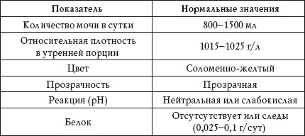
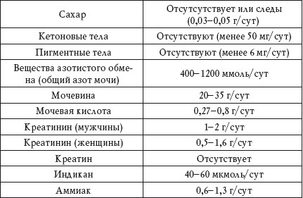
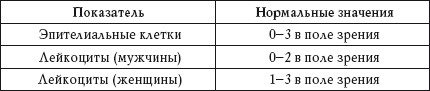
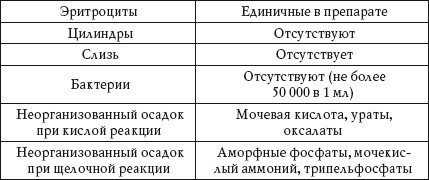
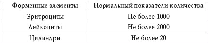
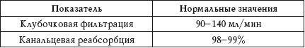

Образование мочи происходит путем фильтрации плазмы крови в почечных клубочках и обратного всасывавания растворенных в ней веществ и воды в канальцах.
Материалом для исследования чаще всего служит утренняя моча.
В составе мочи из организма выводятся конечные продукты обмена веществ. В зависимости от употребляемой пищи и выпитой жидкости состав мочи может меняться.
Общий анализ мочи
Нормальные показатели общего анализа мочи приведены в таблице 64.
Таблица 64
Нормальные показатели общего анализа мочи


Количество
Выделение мочи за единицу времени называется диурезом. Он может быть суточным, дневным (9.00-21.00), ночным (21.00-9.00), часовым и т. д. Отношение дневного диуреза к ночному – 3 : 1.
Повышенный показатель
Повышенное выделение мочи – полиурия – наблюдается при:
• употреблении большого количества жидкости;
• нервном возбуждении;
• заболеваниях гипоталамуса;
Количество мочи в утренней порции – 100-300 мл. Это нормальные показатели.
• сахарном диабете;
• избыточном потреблении солей натрия, глюкозы, аминокислот;
• несахарном диабете;
• нефропатии;
• воздействии наркотиков;
• беременности (вторая половина);
• менструации;
• остром пиелонефрите;
• хронической почечной недостаточности;
• приеме диуретиков;
• амилоидозе;
• саркоидозе;
• миеломной болезни;
• пересадке почки;
• стенозе почечной артерии;
• диуретической фазе острого канальцевого некроза;
• приеме кофеина, этанола, аспирина, лития, препаратов наперстянки.
Пониженный показатель
Пониженное выделение мочи – олигурия – наблюдается при:
• недостаточном употреблении жидкости;
• обильном потоотделении;
• нефрите;
• нефрозе;
• воспалительных процессах в почечной паренхиме;
• диарее;
• рвоте;
• кровопотере;
• обширных ожогах;
• отеках;
• кишечной непроходимости;
• травмах живота;
• действии свинца, мышьяка, висмута, этиленгликоля;
• приеме некоторых лекарственных препаратов;
• мочекаменной болезни;
• опухолях органов мочеполовой системы.
Анурия
Полное прекращение выделения мочи наблюдается при:
• закупорке мочевыводящих путей камнем или опухолью;
• острой почечной недостаточности;
• тяжелой форме острого гломерулонефрита.
Ишурия
Задержка выделения мочи наблюдается при поражениях спинного мозга у больных, находящихся без сознания.
Никтурия
Преобладание ночного диуреза над дневным наблюдается при:
• нарушении сердечной деятельности;
• хронической почечной недостаточности.
Учащение мочеиспускания (свыше 6 раз в сутки) – поллакиурия – сочетается, как правило, с полиурией.
Частое моиспускание небольшими порциями называется долакиурией.
Плотность
Относительная плотность мочи пропорциональна концентрации растворенных в ней органических веществ и электролитов. У здорового человека плотность мочи зависит в основном от суточного диуреза: чем он выше, тем ниже относительная плотность.
Повышенный показатель
Повышенная относительная плотность мочи – гиперстенурия – наблюдается при:
• остром гломерулонефрите;
• недостаточном кровообращении;
• диарее;
• рвоте;
• кровопотере;
• отеках;
• обширных ожогах;
• кишечной непроходимости;
• травмах живота;
• наличии в моче большого количества белка, глюкозы;
• воздействии маннитола, декстрана и рентгеноконтрастных веществ;
• токсикозе беременных.
Пониженный показатель
Пониженная относительная плотность мочи – гипостенурия – наблюдается при:
• несахарном диабете;
• поражении почечных канальцев;
• злокачественной гипертензии;
• хронической почечной недостаточности.
Цвет
Цвет мочи зависит от содержания в ней пигментов.
Он тесно связан с плотностью мочи и изменяется при приеме различных лекарственных препаратов и пищевых продуктов.
Темно-желтый цвет
Темно-желтый цвет мочи наблюдается при:
• высокой концентрации пигментов;
• отеках;
• диарее;
• рвоте;
• кровопотере;
• обширных ожогах;
• сердечной недостаточности.
Светло-желтый цвет
Светло-желтый цвет мочи наблюдается при:
• малой концентрации пигментов;
• сахарном диабете;
• несахарном диабете.
Темно-бурый цвет
Темно-бурый цвет мочи наблюдается при гемолитической анемии.
Черный цвет
Черный цвет мочи наблюдается при:
• меланосаркоме;
• гемоглобинурии.
Зеленовато-бурый цвет
Зеленовато-бурый цвет мочи наблюдается при:
• билирубинурии;
• уробилиногенурии.
Зеленовато-желтый цвет
Зеленовато-желтый цвет наблюдается при билирубинурии.
Красный цвет
Красный цвет мочи наблюдается при;
• инфаркте почки;
• почечной колике.
Прозрачность
У здорового человека моча прозрачная. Помутнение мочи наблюдается при попадании в нее большого количества лейкоцитов, бактерий, слизи, эпителиальных клеток, а также при выпадении в осадок солей.
Реакция
В обычных условиях моча слабокислая. Реакция мочи (pH) зависит от режима питания и, как правило, составляет от 4 до 8. Вегетарианская пища обуславливает щелочную реакцию мочи, мясная – кислую.
Повышенный показатель
Повышение pH более 7 наблюдается при:
• почечном канальцевомалкалозе;
• бактериальном разложении мочевины;
• метаболическом и респираторном алкалозе;
• вегетарианской диете (после приема пищи);
• гиперкалиемии;
• действии цитрата натрия, адреналина, альдостерона, бикарбонатов;
• хронической почечной недостаточности.
Пониженный показатель
Понижение pH менее 5 наблюдается при:
• диете с высоким содержанием белка;
• метаболическом и респираторном ацидозе;
•гипокалиемии;
• обезвоживании;
• лихорадке;
• сахарном диабете;
• действии аскорбиновой кислоты, хлорида аммония, кортикотропина.
Белок
Повышенный показатель
Наличие белка в моче – протеинурия – наблюдается при:
• переохлаждении;
• тяжелой физической нагрузке;
• гломерулонефрите;
• инфекционных заболеваниях;
• аллергии;
• гипертонии;
• нарушении сердечной деятельности;
• амилоидозе;
• нефрите;
• синдроме Фанкони;
• остром канальцевомнекрозе;
• миеломной болезни;
• гемолизе эритроцитов;
• некрозе мышечной ткани;
• цистите;
• кольпите;
• уретрите;
• действии отравляющих веществ;
• травмах мышц.
Сахар
Повышенный показатель
Наличие сахара в моче – глюкозурия – наблюдается при:
• приеме большого количества углеводов (у пожилых людей);
• стрессе;
• сахарном диабете;
• панкреатите;
• раке поджелудочной железы;
• диффузных поражениях печени;
• болезни Иценко – Кушинга;
• гипертиреозе;
• феохромоцитоме;
• акромегалии;
• инсульте;
• отравлении оксидом углерода, хлороформом, морфием, фосфором, некоторыми лекарственными препаратами;
• черепно-мозговых травмах;
• почечном диабете;
• хроническом нефрите;
• острой почечной недостаточности;
• беременности.
Кетоновые тела
Продукты неполного окисления белков и липидов – кетоновые тела – синтезируются в печени.
Повышенный показатель
Наличие в моче кетоновых тел – кетонурия – наблюдается при:
При диабете для коррекции диеты и медикаментозной терапии очень важно определение кетоновых тел в моче.
• сахарном диабете;
• голодании;
• диете, направленной на снижение веса;
• дизентерии;
• дефиците углеводов в продуктах питания;
• употреблении преимущественно жирной и белковой пищи;
• болезни Гирке;
• гиперкетонемической коме;
• опухоли надпочечников или передней доли гипофиза.
Пигментные тела
Повышенный показатель
Наличие в моче пигментных тел наблюдается при:
• гемолитической анемии;
• инфаркте миокарда;
• ревматизме;
• циррозе печени;
• воздействии алкоголя, органических соединений, инфекционных токсинов;
• болезни Понтера;
• гемолитической анемии;
• полицитемии;
• механической желтухе;
• рассасывании массивных гематом;
• вирусном и хроническом гепатите;
• колите.
Вещества азотистого обмена
Повышенный показатель
Повышенное количество веществ азотистого обмена наблюдается при:
• диабете;
• диете с преобладанием белковой пищи;
• лихорадке;
• хроническом отравлении фосфором;
• распаде белков ткани.
Сумму всех веществ азотистого обмена, находящихся в моче, называют общим азотом мочи. К веществам азотистого обмена относятся мочевина, мочевая кислота, креатинин, креатин, аминокислоты, аммиак и другие вещества.
Пониженный показатель
Пониженное количество веществ азотистого обмена наблюдается при:
• нефрите;
•заболеваниях сердечно-сосудистой системы;
• циррозе печени;
• гепатите.
Мочевина
Мочевина составляет 80-95% от всех веществ азотистого обмена. Она образуется в печени при обеззараживании аммиака.
Повышенный показатель
Повышенное количество мочевины наблюдается при:
• белковой диете;
• лихорадке;
• распаде белков тканей;
• отравлении фосфором;
• злокачественной анемии;
• воздействии производных салициловой кислоты.
Пониженный показатель
Пониженное количество мочевины наблюдается при:
• циррозе печени;
• гепатите;
• уремии;
• ацидозе;
• болезнях почек.
Мочевая кислота
Повышенный показатель
Повышенное количество мочевой кислоты – гиперурикурия – наблюдается при:
• лейкозе;
• усиленном распаде тканей;
• истинной полицитемии;
• большом количестве пуринов в пище;
• химиотерапии;
• болезни Вильсона;
• синдроме Фанкони.
Пониженный показатель
Пониженное количество мочевой кислоты – гипоурикурия – наблюдается при:
• подагре;
• гломерулонефрите;
• прогрессирующей мышечной дистрофии;
• амилоидозе почек;
• алкоголизме;
• отравлении солями тяжелых металлов.
Креатинин
Повышенный показатель
Повышенное количество креатинина – гиперкреатининурия – наблюдается при:
• травмах мышц;
• физическом переутомлении;
• лихорадке;
• диете с преобладанием мясной пищи;
• болезнях печени;
• пневмонии.
Пониженный показатель
Пониженное количество креатинина – гипокреатининурия – наблюдается при:
• мышечной дистрофии;
• миозите;
• миопатии;
• миоглобинурии;
• хроническом нефрите с уремией;
• почечной недостаточности;
• лейкемии;
• дегенерации почек.
Анализ на креатинин используется для оценки функционального состояния почек.
Креатин
Повышенный показатель
Наличие в моче креатина – креатинурия – наблюдается при:
• мышечной дистрофии;
• миозите;
• миопатии;
• болезнях надпочечников;
• поражении печени;
• инфекционных заболеваниях;
• пневмонии;
• голодании;
• заживлении множественных переломов;
• диете с преобладанием мясной пищи;
• половом созревании;
• дефиците витамина С и токоферола.
Индикан
Повышенный показатель
Повышенное количество индикана наблюдается при:
• абсцессах;
• опухолях;
• бронхоэктазии;
• непроходимости кишечника;
• запоре.
Пониженный показатель
Пониженное количество индикана наблюдается при:
• нефрите;
• амилоидозе;
• туберкулезе почек;
• нарушении кровообращения;
• длительном поносе;
• неукротимой рвоте;
• ожогах;
• кровотечениях;
• болезнях печени;
• декомпенсации сердечной деятельности.
Аммиак
Повышенный показатель
Повышенное количество аммиака наблюдается при:
• циррозе печени;
• алкоголизме;
• печеночной коме;
• ожогах;
• серьезных травмах;
• отравлении фосфором и мышьяком;
• переливании несовместимой крови.
Осадок в моче
Осадок в моче бывает двух видов: организованный (эритроциты, лейкоциты, эпителиальные клетки, цилиндры) и неорганизованный (соли и кристаллические образования).
Нормальные показатели анализа мочи на осадок приведены в таблице 65.
Таблица 65
Нормальные показатели осадка в моче


Эпителиальные клетки
Эпителиальные клетки разделяют на плоские, переходные и почечные.
Плоские эпителиальные клетки
Плоский эпителий попадает в мочу из влагалища и наружных половых органов и не имеет диагностического значения.
Переходные эпителиальные клетки
Наличие в моче эпителия мочевого пузыря, мочеточников и почечных лоханок наблюдается при:
• цистите;
• пиелите;
• новообразованиях мочевыводящих путей.
Почечные эпителиальные клетки
Наличие в моче эпителия канальцев почек наблюдается при:
• дегенеративных изменениях в почечной ткани;
• воспалительном процессе в канальцах почек.
Лейкоциты
Повышенный показатель Наличие лейкоцитов в моче – лейкоцитурия – наблюдается при:
• пиелонефрите;
• интерстициальном и волчаночном нефрите;
• туберкулезе почек;
• гломерулонефрите;
• цистите;
Наличие в моче более 5-6 лейкоцитов является признаком заболевания почек и мочевыводящих путей. Лейкоцитурия в первой порции указывает на уретрит или простатит, во второй – на воспаление мочевого пузыря или почек, после массажа простаты, перед сбором третьей порции – на простатит.
• пиелите;
• простатите;
• уретрите;
• нефрозе;
•сильной физической нагрузке;
•лихорадочном состоянии;
• при воздействии ампициллина, канамицина, аспирина, героина и солей железа.
Эритроциты
Повышенный показатель Наличие в моче эритроцитов – гематурия – наблюдается при:
• острой почечной недостаточности;
• гломерулонефрите;
• инфаркте почки;
• туберкулезе почки;
• плохом кровообращении с застойными явлениями;
• мочекаменной болезни;
• травме мочевыводящих путей;
• онкологических заболеваниях мочевыводящих путей;
• цистите;
• пиелите;
• уретрите;
• гипертрофии простаты;
• приеме пенициллина, сульфаниламидов, антикоагулянтов, индометацина, аспирина.
Цилиндры
Различают гиалиновые, зернистые, восковидные, лейкоцитарные, эритроцитарные и эпителиальные цилиндры.
Гиалиновые цилиндры
Повышенное количество
Наличие в моче гиалиновых цилиндров наблюдается при:
• гломерулонефрите;
• аллергии;
• инфекционных болезнях;
• гипертонии;
• нарушении сердечной деятельности;
• нефропатии беременных;
• остром пиелонефрите;
• туберкулезе почек и мочевыводящих путей;
• лихорадочном состоянии;
• отравлении солями тяжелых металлов;
• купании в холодной воде;
• сильной физической нагрузке;
• приеме диуретиков.
Зернистые цилиндры
Повышенное количество
Наличие в моче зернистых цилиндров наблюдается при:
• гломерулонефрите;
• пиелонефрите;
• амилоидозе;
• отравлении солями тяжелых металлов;
• сильной физической нагрузке;
• лихорадочном состоянии.
Восковидные цилиндры
Повышенное количество
Наличие в моче восковидных цилиндров наблюдается при:
• амилоидозе;
• почечной недостаточности.
Лейкоцитарные цилиндры
Повышенное количество
Наличие в моче лейкоцитарных цилиндров наблюдается при:
• пиелонефрите;
• волчаночном нефрите.
Эритроцитарные цилиндры
Повышенное количество
Наличие в моче эритроцитарных цилиндров наблюдается при:
• гломерулонефрите;
• тромбозе почечной вены;
• инфаркте почки;
• бактериальном эндокардите;
• полиартериите.
Эпителиальные цилиндры
Повышенное количество
Наличие в моче эпителиальных цилиндров наблюдается при:
• вирусных заболеваниях;
• амилоидозе;
• остром нефрозе;
• отравлении салицилатами, солями тяжелых металлов и этиленгликолем.
Цилиндры – это белковые образования, которые отсутствуют в моче здорового человека.
Бактерии
Повышенный показатель Более 50 000 микробных клеток в 1 мл мочи наблюдается при воспалительном процессе.
Неорганизованный осадок
Неорганизованный осадок состоит из солей и кристаллических образований. Он часто зависит от характера питания человека, поэтому не имеет большого клинического значения.
Мочевая кислота
Наличие в осадке мочевой кислоты наблюдается при:
• физическом переутомлении;
• мясной диете;
• мочекислом диатезе;
• лихорадочных состояниях;
• диарее;
• рвоте;
• сильной потливости;
• воздействии цитостатиков;
• лейкозе.
Ураты
Наличие в осадке уратов наблюдается при:
• подагре;
• лихорадочных состояниях;
• диарее;
• рвоте;
• сильной потливости;
• воздействии цитостатиков;
• обширных ожогах;
• злокачественных опухолях;
• почечной недостаточности.
Оксалаты
Наличие в осадке оксалатов наблюдается при:
• употреблении капусты и ревеня;
• хронических болезнях почек;
• отравлении;
• резекции тонкой кишки;
• нарушении обмена кальция.
Аморфные фосфаты
Наличие в осадке аморфных фосфатов наблюдается при:
• фруктовой диете;
• задержке мочи;
• цистите.
Мочекислый аммоний
Наличие в осадке мочекислого аммония наблюдается при цистите с аммиачным брожением в мочевом пузыре.
Трипельфосфаты
Наличие в осадке трипельфосфатов наблюдается при:
• растительной диете;
• употреблении большого количества минеральной воды;
• задержке мочи;
• цистите.
Анализ мочи по Нечипоренко
С помощью этого анализа оценивается состояние почек и мочевыводящих путей. Данное исследование, как правило, назначают после общего анализа мочи, если в нем не были выявлены отклонения от нормы, тогда как симптомы у обследуемого указывают на наличие того или иного заболевания.
При проведении анализа подсчитывается количество форменных элементов в 1 мл мочи (табл. 66).
Таблица 66
Анализ мочи по Нечипоренко. Нормальные показатели

Эритроциты
Повышенный показатель
Повышенное количество эритроцитов наблюдается при:
• острой почечной недостаточности;
• гломерулонефрите;
• мочекаменной болезни;
• онкологических заболеваниях мочевыводящих путей;
• цистите;
• пиелите;
• уретрите.
Как правило, при гломерулонефрите количество эритроцитов выше, чем число лейкоцитов, при пиелонефрите – наоборот.
Лейкоциты
Повышенный показатель
Повышенный показатель лейкоцитов наблюдается при:
• пиелонефрите;
• цистите;
• пиелите;
• простатите;
• уретрите;
• нефрозе.
При мочекаменной болезни наблюдается вторичная гематурия, которая иногда сопровождается хроническим пиелонефритом.
Цилиндры
Повышенный показатель
Повышенный показатель цилиндров наблюдается при:
• чрезмерных физических нагрузках;
• эпилепсии;
• пороках сердца;
• гипертонии;
• токсикозе беременных;
• подагре;
• вирусном гепатите;
• сердечной декомпенсации.
Проба Роберга
Данный анализ представляет собой исследование фильтрации по эндогенному креатинину. Для исследования собирают суточную мочу. При проведении пробы вычисляют минутный диурез, определяют концентрацию креатинина в крови и в моче, а затем по специальной формуле вычисляют клубочковую фильтрацию и канальцевую реабсорбцию (табл. 67).
Таблица 67
Проба Роберга. Нормальные показатели

Клубочковая фильтрация
Повышенный показатель
Повышенный показатель клубочковой фильтрации наблюдается при:
• сахарном диабете;
• нефротическом синдроме;
• гипертонии.
Пониженный показатель
Пониженный показатель клубочковой фильтрации наблюдается при почечной недостаточности. Существенное понижение клубочковой фильтрации указывает на декомпенсированную почечную недостаточность.
Канальцевая реабсорбция
Повышенный показатель
Повышенный показатель канальцевой реабсорбции наблюдается при гиповолемических состояниях.
Пониженный показатель
Пониженный показатель канальцевой реабсорбции наблюдается при:
• пиелонефрите;
• почечной недостаточности;
• приеме диуретиков;
• интерстициальном нефрите.